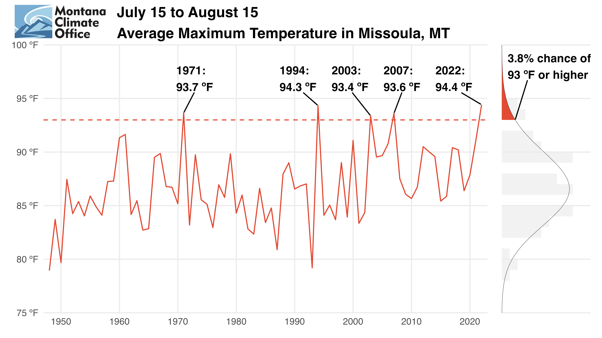

2022_missoula_heat
- The average high temperature at the Missoula Airport for July 15 to August 15, 2022 was 94.4 ¬∫F ‚Äî the hottest mid-July to mid-August for the Missoula Valley since daily records began in 1948. But get ready: hot spells like this one are becoming our new normal. Here‚Äôs why (a üßµ):

- A “record-breaking event” is usually defined in the context of our complete historical record—in this case, back to 1948. During this period there was a 1.6% chance of a month like this one (a 1-in-50 to 1-in-100 year event). Pretty good (low) odds (unless you like it hot).
- However, several summers since 1948 have been nearly as hot. 1971, 1994, 2003, 2007, and 2022 all had average high temperatures above 93 ºF. Given the same historical record, there is a 3.8% chance of these hot-but-not-hottest spells (a 1-in-25 year event).

- Note though that most of these hot summers have been in the last 30 years, the period we use to define Missoula’s current climate. During this period there is a 9.7% chance of a period with high temps above 93 ºF, or a 1-in-10 year event. And the odds look to be trending higher…
- And also, in the context of the last 30 years, there is a 4.9% chance (1-in-20 year event) of having a mid-July to mid-August as hot as this one (the hottest on record!).
- In fact, the likelihood of a month like this one in any given year given its prior 30 years has been increasing dramatically since the turn of the millennium.
- A 95 ºF month like this one, which was practically unheard of during the last century, is becoming much more common. This is climate change.

Learn how you can prepare for the heat from our friends at @ClimateSmartmsl (https://www.missoulaclimate.org), and visit the Montana Climate Office’s website for more local climate and weather information (https://climate.umt.edu).
Code and data supporting this üßµ are available on @github, and made use of the great
rnoaapackage from @NOAA. Check out the repo for details and future analyses! https://github.com/mt-climate-office/mini-analyses